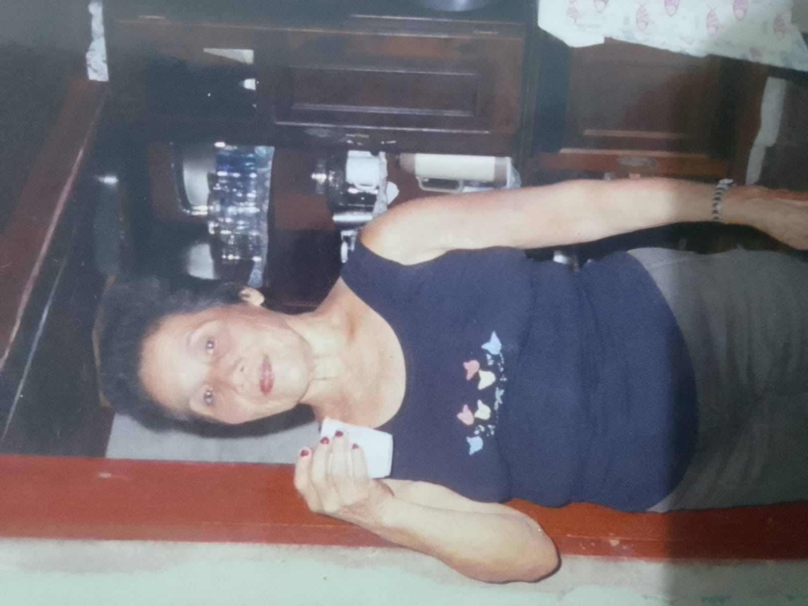
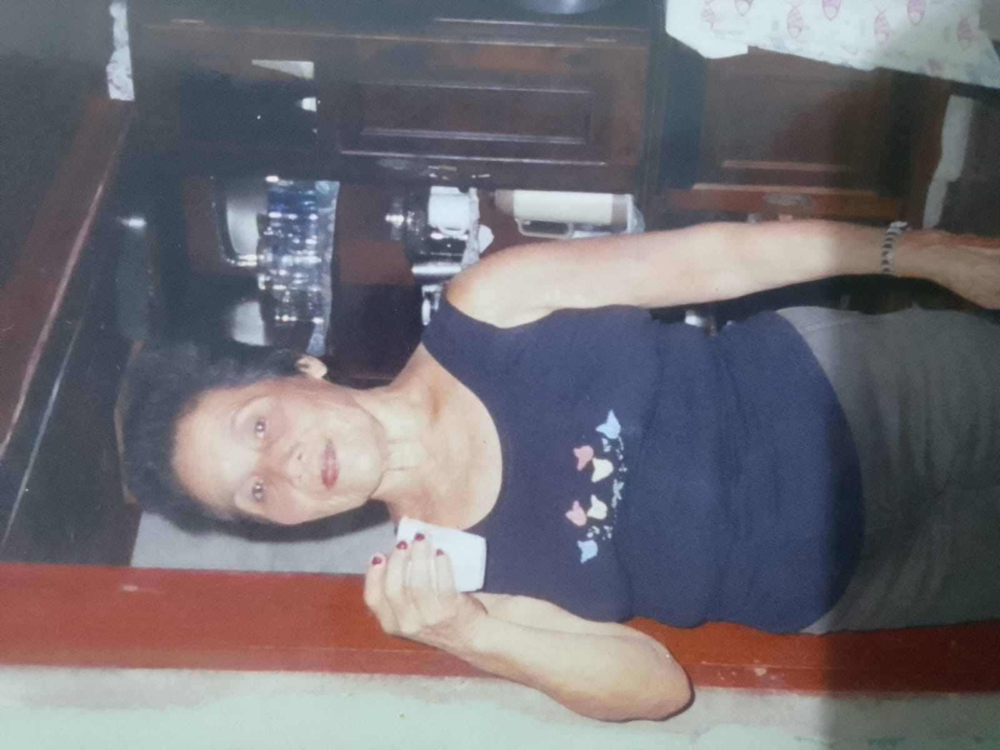

Capítulo 4 – Ascendência Rocha
A ascendência Rocha carrega em sua essência a miscigenação que marca a formação do povo amazônico: a união entre a cultura indígena, o trabalho artesanal e a herança europeia. Suas raízes fincam-se profundamente no interior do Amazonas, especialmente na região de Itacoatiara, onde a família construiu sua história ao longo de gerações. Há linhagens que nascem da terra. Outras nascem do encontro de culturas. A ascendência Rocha nasce dos dois. “De um só fez toda a geração dos homens.” A diversidade também é plano. Entre rios, enchentes, madeira e oração, formou-se uma identidade firme, moldada pela simplicidade e pela resistência.
Ivaneide Rocha do Nascimento
.jpeg) Ivaneide Rocha do Nascimento
Ivaneide Rocha do Nascimento
Ivaneide Rocha do Nascimento nasceu em 18 de março de 1945, em Itacoatiara – AM. Mulher dedicada ao lar, consagrou sua vida à criação e à educação dos filhos, exercendo um papel fundamental na transmissão de valores como responsabilidade, cuidado e união familiar. Sua presença firme e acolhedora tornou-se um dos pilares da família, influenciando diretamente as gerações seguintes. Há mulheres que sustentam casas. E há mulheres que sustentam gerações. “A força e a dignidade são os seus vestidos.” O caráter é a herança mais duradoura.
Ivaneide era filha de Emanuel Souza da Rocha e Laurentina Batista de Souza Lima, união que simboliza a diversidade cultural presente na história da família. Quando culturas se encontram, nasce algo novo — mas não se perde a essência.
Origem Familiar Rocha
A família Rocha tem suas origens em Varre Vento, Itacoatiara – AM, local marcado pela vida simples, pelo trabalho manual e pela forte ligação com a terra e os rios. Emanuel Souza da Rocha, descrito como índio caboclo e carpinteiro, nascido por volta de 1910, representava a tradição amazônica do trabalho com as mãos e do conhecimento transmitido de pai para filho. Seu ofício não era apenas meio de sustento, mas expressão de habilidade, paciência e sabedoria prática. O interior amazônico não forma apenas trabalhadores. Forma resistentes. A carpintaria ensina algo além da técnica: toda estrutura precisa de base firme. “Tudo quanto fizerdes, fazei-o de coração.” Trabalho também é honra.
Emanuel uniu-se a Laurentina Batista de Souza Lima, nascida por volta de 1910, filha de José de Souza Lima, nascido por volta de 1880, e de Olentina Lima, de origem portuguesa, nascida por volta de 1880. Laurentina trouxe para a família a herança europeia, unindo-se à cultura indígena e cabocla em um encontro que reflete a própria formação histórica do Brasil. Essa união não foi apenas matrimonial. Foi simbólica. Brasil é mistura. A família Rocha também. “Melhor é o fim das coisas do que o princípio delas.” O que começa simples pode tornar-se legado.
Dessa união nasceu Ivaneide Rocha do Nascimento, em 18 de março de 1945, em Itacoatiara – AM. Ivaneide cresceu em um lar numeroso, compartilhando a infância e a juventude com seus irmãos: Maria, Anselmo, Fernando, Ceci, Irene, José, Pedro, Ivanilde. Famílias grandes ensinam cedo: dividir é necessário. Respeitar é essencial. Proteger é instinto.
A convivência entre irmãos fortaleceu os laços familiares e contribuiu para a transmissão de valores como respeito, solidariedade e união. “Oh! quão bom e quão suave é que os irmãos vivam em união.” União é força silenciosa.
Um Episódio de Coragem e Fé
Entre os muitos acontecimentos que marcaram sua trajetória, um episódio revela de forma singular sua coragem e fé inabalável. Durante uma grande enchente no Cambixe, Ivaneide estava grávida de aproximadamente oito meses. Sua filha Eltineide, ainda criança e sem saber nadar, caiu no rio em meio à forte correnteza. Percebendo a ausência da menina, Ivaneide perguntou a seu outro filho, Marialvo — também ainda criança: — Onde está a Elta? O menino respondeu, apontando para as águas agitadas: — Caiu bem aí. Diante da cena angustiante, Ivaneide clamou em oração: — Meu Deus, me ajuda. Sem hesitar, mesmo grávida e enfrentando a força das águas, lançou-se ao rio. No meio da correnteza, conseguiu alcançar a filha e salvá-la. O fato, contado posteriormente por Marialvo, tornou-se memória viva da família — testemunho da força materna, da fé profunda e do amor que ultrapassa qualquer medo. “Muitas águas não podem apagar o amor.” Amor que protege é amor que marca gerações. Naquele dia, não foi apenas uma criança que foi salva. Foi reafirmada uma identidade familiar: fé, coragem e entrega.
Assim, a ascendência Rocha se estabelece como um capítulo essencial da genealogia familiar, marcada pela diversidade cultural, pelo trabalho honesto e pela dedicação à família — valores que permanecem vivos na memória e na identidade das gerações atuais.
 Laurentina
Laurentina
 Anselmo Rocha
Anselmo Rocha
 Fernando Rocha
Fernando Rocha
 Casamento Joaquim e Ivaneide
Casamento Joaquim e Ivaneide
 Laurentina, Ivaneide e seus filhos

Maria Rocha
Laurentina, Ivaneide e seus filhos

Maria Rocha
.jpeg) Ivaneide Rocha
Ivaneide Rocha
.jpeg) Joaquim (Kinzinho)
Joaquim (Kinzinho)
 Kamila, Marialvo, Diego e Ivaneide
Kamila, Marialvo, Diego e Ivaneide
 Joaquim, Ivaneide e Filhos
Joaquim, Ivaneide e Filhos
 Everton, Edicarlos, Diego, Elaine, Ivaneide, Kamila e Ericarlos
Everton, Edicarlos, Diego, Elaine, Ivaneide, Kamila e Ericarlos
 Em pé - Marivelto, Elzineide, Erivelto, Ivaneide, Essivaldo, Marialvo, Deneide. Agachados - Erimar, Sebastião, Joaquim e Eltineide
Em pé - Marivelto, Elzineide, Erivelto, Ivaneide, Essivaldo, Marialvo, Deneide. Agachados - Erimar, Sebastião, Joaquim e Eltineide
 Essivaldo, Erimar e Marialvo
Essivaldo, Erimar e Marialvo
 Erivelto e Erimar
Erivelto e Erimar
 Ivaneide e Erimar
Ivaneide e Erimar
 Rosinaldo, Ivaneide, Erimar e Deneide
Rosinaldo, Ivaneide, Erimar e Deneide
 Joaquim, Erimar, Ivaneide e Valdinéia
Joaquim, Erimar, Ivaneide e Valdinéia